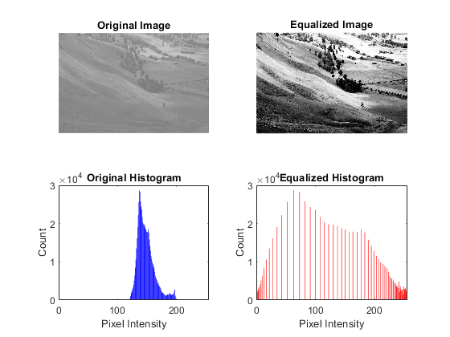

clc;
clear all;
close all;
[file, path] = uigetfile({'*.jpg;*.gif;*.png;*.bmp', 'Image Files (*.jpg, *.gif,*.png, *.bmp)'});
if isequal(file, 0)
error('No file selected');
end
img = imread(fullfile(path, file));
if size(img, 3) == 3
gray_img = rgb2gray(img);
else
gray_img = img;
end
[m, n] = size(gray_img);
img_array = double(gray_img(:));
counts_original = histcounts(img_array, 0:256);
cdf = cumsum(counts_original);
cdf_min = min(cdf(cdf > 0));
L = 256;
h_v = round(((cdf - cdf_min) / ((m * n) - cdf_min)) * (L - 1));
disp("max(cdf) = " + max(cdf));
equalized_img = h_v(gray_img + 1);
counts_equalized = histcounts(equalized_img(:), 0:256);
figure;
subplot(2, 2, 1);
imshow(gray_img);
title('Original Image');
subplot(2, 2, 2);
imshow(uint8(equalized_img));
title('Equalized Image');
subplot(2, 2, 3);
bar(0:255, counts_original, 'FaceColor', 'blue', 'EdgeColor', 'none');
title('Original Histogram');
ylabel('Count');
xlabel('Pixel Intensity');
xlim([0, 255]);
subplot(2, 2, 4);
bar(0:255, counts_equalized, 'FaceColor', 'red', 'EdgeColor', 'none');
title('Equalized Histogram');
ylabel('Count');
xlabel('Pixel Intensity');
xlim([0, 255]);
max(cdf) = 699392
